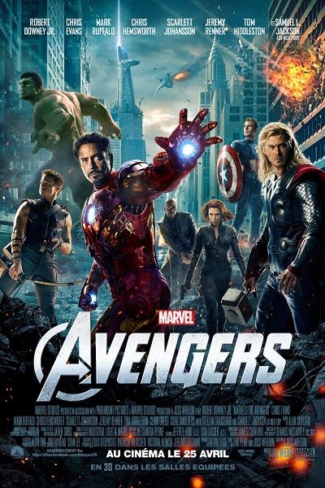
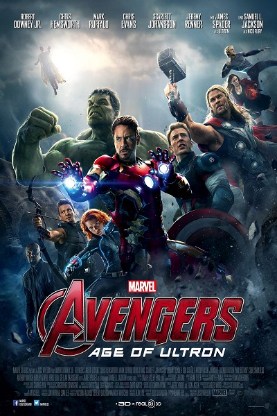

 Le film Avengers est le premier regroupement officiel de super-héros dans le MCU, on y retrouve notamment Captain America, Iron Man, la Veuve Noire etc... Lors de ce film, Loki, le frère, ou plutôt, le demi-frère de Thor veut prendre le contrôle de la Terre, à l'aide du Tesseract, qui est une sorte de pierre cosmique possédant une très grande source d'énegie. Le SHIELD avait la possession du Tesseract dans le but de l'analyser, seulement pendant leurs recherches, un portail s'ouvre permettant à Loki d'arriver SUR Terre à l'aide de son sceptre, lui permettant notamment de contrôler les esprits de n'importe qu'elle personne, ce qui arrivera à Barton.
 Banner et Stark crée une intelligence artificielle, ayant pour but de les aider dans leur combat pour la paix. Seulement leur invention, nommée Ultron, devient trop puissante pour eux et échappe totalement à leur contrôle. Ce dernier va alors considérer que la réelle menace sur Terre sont les humains et prends alors pour but de les éradiquer. Le combat des Avengers les amènera alors jusqu'à Cracovie, en Polongne, où il y aura de nombreuses victimes. Ils y rencontreront également de nouveaux personnages, les jumeaux, qui seront au début contre eux, mais qui finiront par se rallier avec les Avengers, ce qui conduira notamment à la perte du jumeau, ayant le pouvoir de se déplacer avec une très grande vitesse.